Molly examples
The best examples for learning how the package works are in the Molly documentation section. Here we give further examples showing what you can do with the package. Each is a self-contained block of code. Made something cool yourself? Make a PR to add it to this page.
Simulated annealing
You can change the thermostat temperature of a simulation by changing the simulator. Here we reduce the temperature of a simulation in stages from 300 K to 0 K.
using Molly
using GLMakie
data_dir = joinpath(dirname(pathof(Molly)), "..", "data")
ff = MolecularForceField(
joinpath(data_dir, "force_fields", "ff99SBildn.xml"),
joinpath(data_dir, "force_fields", "tip3p_standard.xml"),
joinpath(data_dir, "force_fields", "his.xml"),
)
sys = System(
joinpath(data_dir, "6mrr_equil.pdb"),
ff;
loggers=(temp=TemperatureLogger(100),),
)
minimizer = SteepestDescentMinimizer()
simulate!(sys, minimizer)
temps = [300.0, 200.0, 100.0, 0.0]u"K"
random_velocities!(sys, temps[1])
for temp in temps
simulator = Langevin(
dt=0.001u"ps",
temperature=temp,
friction=1.0u"ps^-1",
)
simulate!(sys, simulator, 5_000; run_loggers=:skipzero)
end
f = Figure(resolution=(600, 400))
ax = Axis(
f[1, 1],
xlabel="Step",
ylabel="Temperature",
title="Temperature change during simulated annealing",
)
for (i, temp) in enumerate(temps)
lines!(
ax,
[5000 * i - 5000, 5000 * i],
[ustrip(temp), ustrip(temp)],
linestyle="--",
color=:orange,
)
end
scatter!(
ax,
100 .* (1:length(values(sys.loggers.temp))),
ustrip.(values(sys.loggers.temp)),
markersize=5,
)
save("annealing.png", f)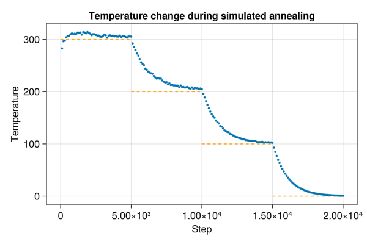
Solar system
Orbits of the four closest planets to the sun can be simulated.
using Molly
using GLMakie
# Using get_body_barycentric_posvel from Astropy
coords = [
SVector(-1336052.8665050615, 294465.0896030796 , 158690.88781384667)u"km",
SVector(-58249418.70233503 , -26940630.286818042, -8491250.752464907 )u"km",
SVector( 58624128.321813114, -81162437.2641475 , -40287143.05760552 )u"km",
SVector(-99397467.7302648 , -105119583.06486066, -45537506.29775053 )u"km",
SVector( 131714235.34070954, -144249196.60814604, -69730238.5084304 )u"km",
]
velocities = [
SVector(-303.86327859262457, -1229.6540090943934, -513.791218405548 )u"km * d^-1",
SVector( 1012486.9596885007, -3134222.279236384 , -1779128.5093088674)u"km * d^-1",
SVector( 2504563.6403826815, 1567163.5923297722, 546718.234192132 )u"km * d^-1",
SVector( 1915792.9709661514, -1542400.0057833872, -668579.962254351 )u"km * d^-1",
SVector( 1690083.43357355 , 1393597.7855017239, 593655.0037930267 )u"km * d^-1",
]
body_masses = [
1.989e30u"kg",
0.330e24u"kg",
4.87e24u"kg" ,
5.97e24u"kg" ,
0.642e24u"kg",
]
boundary = CubicBoundary(1e9u"km")
# Convert the gravitational constant to the appropriate units
inter = Gravity(G=convert(typeof(1.0u"km^3 * kg^-1 * d^-2"), Unitful.G))
sys = System(
atoms=[Atom(mass=m) for m in body_masses],
coords=coords .+ (SVector(5e8, 5e8, 5e8)u"km",),
boundary=boundary,
velocities=velocities,
pairwise_inters=(inter,),
loggers=(coords=CoordinateLogger(typeof(1.0u"km"), 10),),
force_units=u"kg * km * d^-2",
energy_units=u"kg * km^2 * d^-2",
)
simulator = Verlet(
dt=0.1u"d",
remove_CM_motion=false,
)
simulate!(sys, simulator, 3650) # 1 year
visualize(
sys.loggers.coords,
boundary,
"sim_planets.mp4";
trails=5,
color=[:yellow, :grey, :orange, :blue, :red],
markersize=[0.25, 0.08, 0.08, 0.08, 0.08],
transparency=false,
)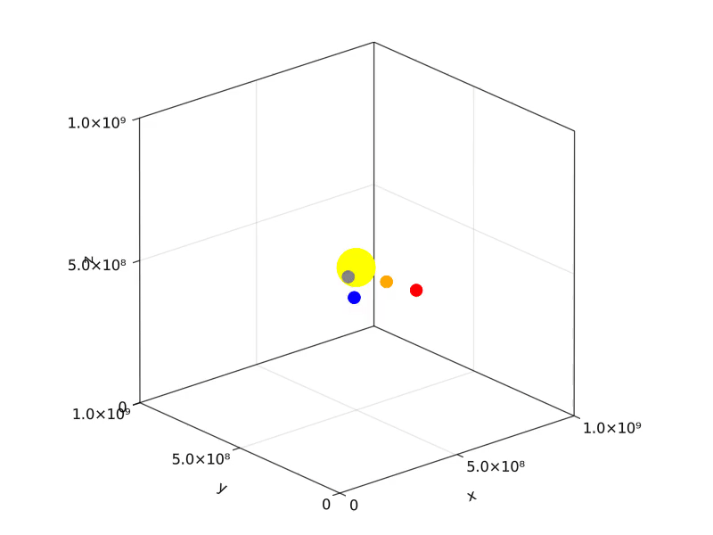
Agent-based modelling
Agent-based modelling (ABM) is conceptually similar to molecular dynamics. Julia has Agents.jl for ABM, but Molly can also be used to simulate arbitrary agent-based systems in continuous space. Here we simulate a toy SIR model for disease spread. This example shows how atom properties can be mutable, i.e. change during the simulation, and includes custom forces and loggers (see below for more info).
using Molly
using GLMakie
@enum Status susceptible infected recovered
# Custom atom type
mutable struct Person
i::Int
status::Status
mass::Float64
σ::Float64
ϵ::Float64
end
# Custom PairwiseInteraction
struct SIRInteraction <: PairwiseInteraction
dist_infection::Float64
prob_infection::Float64
prob_recovery::Float64
end
# Custom force function
function Molly.force(inter::SIRInteraction,
vec_ij,
coord_i,
coord_j,
atom_i,
atom_j,
boundary)
if (atom_i.status == infected && atom_j.status == susceptible) ||
(atom_i.status == susceptible && atom_j.status == infected)
# Infect close people randomly
r2 = sum(abs2, vec_ij)
if r2 < inter.dist_infection^2 && rand() < inter.prob_infection
atom_i.status = infected
atom_j.status = infected
end
end
# Workaround to obtain a self-interaction
if atom_i.i == (atom_j.i - 1)
# Recover randomly
if atom_i.status == infected && rand() < inter.prob_recovery
atom_i.status = recovered
end
end
return zero(coord_i)
end
# Custom logger
function fracs_SIR(s::System, neighbors=nothing; n_threads::Integer=Threads.nthreads())
counts_sir = [
count(p -> p.status == susceptible, s.atoms),
count(p -> p.status == infected , s.atoms),
count(p -> p.status == recovered , s.atoms)
]
return counts_sir ./ length(s)
end
SIRLogger(n_steps) = GeneralObservableLogger(fracs_SIR, Vector{Float64}, n_steps)
temp = 1.0
boundary = RectangularBoundary(10.0)
n_steps = 1_000
n_people = 500
n_starting = 2
atoms = [Person(i, i <= n_starting ? infected : susceptible, 1.0, 0.1, 0.02) for i in 1:n_people]
coords = place_atoms(n_people, boundary; min_dist=0.1)
velocities = [random_velocity(1.0, temp; dims=2) for i in 1:n_people]
lj = LennardJones(
cutoff=DistanceCutoff(1.6),
use_neighbors=true,
force_units=NoUnits,
energy_units=NoUnits,
)
sir = SIRInteraction(0.5, 0.06, 0.01)
pairwise_inters = (LennardJones=lj, SIR=sir)
neighbor_finder = DistanceNeighborFinder(
eligible=trues(n_people, n_people),
n_steps=10,
dist_cutoff=2.0,
)
simulator = VelocityVerlet(
dt=0.02,
coupling=AndersenThermostat(temp, 5.0),
)
sys = System(
atoms=atoms,
coords=coords,
boundary=boundary,
velocities=velocities,
pairwise_inters=pairwise_inters,
neighbor_finder=neighbor_finder,
loggers=(
coords=CoordinateLogger(Float64, 10; dims=2),
SIR=SIRLogger(10),
),
force_units=NoUnits,
energy_units=NoUnits,
)
simulate!(sys, simulator, n_steps)
visualize(sys.loggers.coords, boundary, "sim_agent.mp4"; markersize=0.1)
We can use the logger to plot the fraction of people susceptible, infected and recovered over the course of the simulation:
using GLMakie
f = Figure()
ax = Axis(f[1, 1], xlabel="Snapshot", ylabel="Fraction")
lines!([l[1] for l in values(sys.loggers.SIR)], label="Susceptible")
lines!([l[2] for l in values(sys.loggers.SIR)], label="Infected")
lines!([l[3] for l in values(sys.loggers.SIR)], label="Recovered")
axislegend()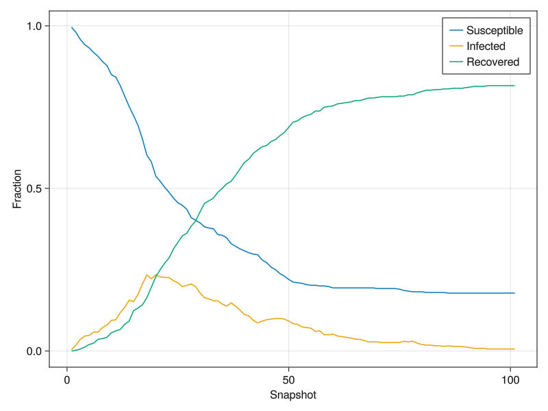
Polymer melt
Here we use FENEBond, CosineAngle and LennardJones to simulate interacting polymers. We also analyse the end-to-end polymer distances and chain angles across the trajectory.
using Molly
using GLMakie
using Colors
using LinearAlgebra
# Simulate 10 polymers each consisting of 6 monomers
n_polymers = 10
n_monomers = 6
n_atoms = n_monomers * n_polymers
n_bonds_mon = n_monomers - 1
n_bonds_tot = n_bonds_mon * n_polymers
n_angles_mon = n_monomers - 2
n_angles_tot = n_angles_mon * n_polymers
starting_length = 1.1u"nm"
boundary = CubicBoundary(20.0u"nm")
# Random placement of polymer centers at the start
start_coords = place_atoms(n_polymers, boundary; min_dist=6.0u"nm")
# Polymers start almost completely extended
coords = []
for pol_i in 1:n_polymers
for mon_i in 1:n_monomers
push!(coords, start_coords[pol_i] .+ SVector(
starting_length * (mon_i - 1 - n_monomers / 2),
rand() * 0.1u"nm",
rand() * 0.1u"nm",
))
end
end
coords = [coords...] # Ensure the array is concretely typed
# Create FENEBonds between adjacent monomers
bond_is, bond_js = Int[], Int[]
for pol_i in 1:n_polymers
for bi in 1:n_bonds_mon
push!(bond_is, (pol_i - 1) * n_monomers + bi )
push!(bond_js, (pol_i - 1) * n_monomers + bi + 1)
end
end
fene_k = 250.0u"kJ * mol^-1 * nm^-2"
fene_r0 = 1.6u"nm"
bonds = InteractionList2Atoms(
bond_is,
bond_js,
[FENEBond(k=fene_k, r0=fene_r0, σ=1.0u"nm", ϵ=2.5u"kJ * mol^-1") for _ in 1:n_bonds_tot],
)
# Create CosineAngles between adjacent monomers
angle_is, angle_js, angle_ks = Int[], Int[], Int[]
for pol_i in 1:n_polymers
for bi in 1:n_angles_mon
push!(angle_is, (pol_i - 1) * n_monomers + bi )
push!(angle_js, (pol_i - 1) * n_monomers + bi + 1)
push!(angle_ks, (pol_i - 1) * n_monomers + bi + 2)
end
end
angles = InteractionList3Atoms(
angle_is,
angle_js,
angle_ks,
[CosineAngle(k=2.0u"kJ * mol^-1", θ0=0.0) for _ in 1:n_angles_tot],
)
atoms = [Atom(mass=10.0u"g/mol", σ=1.0u"nm", ϵ=0.5u"kJ * mol^-1") for _ in 1:n_atoms]
# Since we are using a generic pairwise Lennard-Jones potential too we need to
# exclude adjacent monomers from the neighbor list
eligible = trues(n_atoms, n_atoms)
for pol_i in 1:n_polymers
for mon_i in 1:n_bonds_mon
i = (pol_i - 1) * n_monomers + mon_i
j = (pol_i - 1) * n_monomers + mon_i + 1
eligible[i, j] = false
eligible[j, i] = false
end
end
lj = LennardJones(
cutoff=DistanceCutoff(5.0u"nm"),
use_neighbors=true,
)
neighbor_finder = DistanceNeighborFinder(
eligible=eligible,
n_steps=10,
dist_cutoff=5.5u"nm",
)
sys = System(
atoms=atoms,
coords=coords,
boundary=boundary,
pairwise_inters=(lj,),
specific_inter_lists=(bonds, angles),
neighbor_finder=neighbor_finder,
loggers=(coords=CoordinateLogger(200),),
)
sim = Langevin(dt=0.002u"ps", temperature=300.0u"K", friction=1.0u"ps^-1")
simulate!(sys, sim, 100_000)
colors = distinguishable_colors(n_polymers, [RGB(1, 1, 1), RGB(0, 0, 0)]; dropseed=true)
visualize(
sys.loggers.coords,
boundary,
"sim_polymer.gif";
connections=zip(bond_is, bond_js),
color=repeat(colors; inner=n_monomers),
connection_color=repeat(colors; inner=n_bonds_mon),
)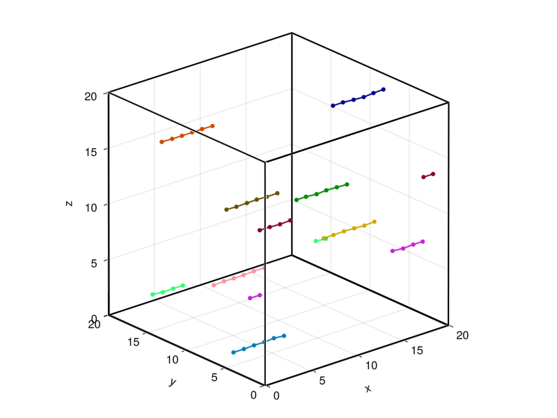
logged_coords = values(sys.loggers.coords)
n_frames = length(logged_coords)
# Calculate end-to-end polymer distances for second half of trajectory
end_to_end_dists = Float64[]
for traj_coords in logged_coords[(n_frames ÷ 2):end]
for pol_i in 1:n_polymers
start_i = (pol_i - 1) * n_monomers + 1
end_i = pol_i * n_monomers
dist = norm(vector(traj_coords[start_i], traj_coords[end_i], boundary))
push!(end_to_end_dists, ustrip(dist))
end
end
f = Figure(resolution=(600, 400))
ax = Axis(
f[1, 1],
xlabel="End-to-end distance / nm",
ylabel="Density",
title="End-to-end polymer distance over the trajectory",
)
hist!(ax, end_to_end_dists, normalization=:pdf)
xlims!(ax, low=0)
ylims!(ax, low=0)
save("polymer_dist.png", f)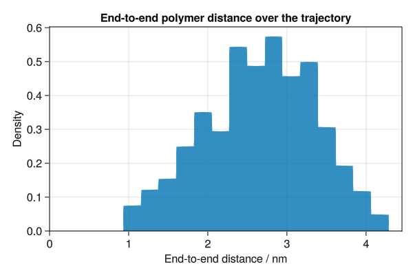
# Calculate angles to adjacent monomers for second half of trajectory
chain_angles = Float64[]
for traj_coords in logged_coords[(n_frames ÷ 2):end]
for pol_i in 1:n_polymers
for mon_i in 2:(n_monomers - 1)
ang = bond_angle(
traj_coords[(pol_i - 1) * n_monomers + mon_i - 1],
traj_coords[(pol_i - 1) * n_monomers + mon_i ],
traj_coords[(pol_i - 1) * n_monomers + mon_i + 1],
boundary,
)
push!(chain_angles, rad2deg(ang))
end
end
end
f = Figure(resolution=(600, 400))
ax = Axis(
f[1, 1],
xlabel="Angle with adjacent monomers / degrees",
ylabel="Density",
title="Chain angles over the trajectory",
)
hist!(ax, chain_angles, normalization=:pdf)
xlims!(ax, 0, 180)
ylims!(ax, low=0)
save("polymer_angle.png", f)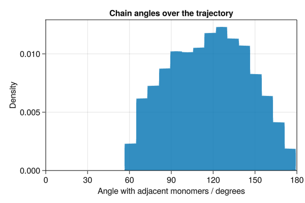
Machine learning potentials
There is an example of using ACE potentials in Molly.
Python ASE calculator
ASECalculator can be used along with PythonCall.jl to use a Python ASE calculator with Molly. Here we simulate a dipeptide molecule in a vacuum with MACE-OFF23:
using Molly
using PythonCall # Python packages ase and mace need to be installed beforehand
using Downloads
Downloads.download(
"https://raw.githubusercontent.com/noeblassel/SINEQSummerSchool2023/main/notebooks/dipeptide_nowater.pdb",
"dipeptide_nowater.pdb",
)
data_dir = joinpath(dirname(pathof(Molly)), "..", "data")
ff = MolecularForceField(joinpath(data_dir, "force_fields", "ff99SBildn.xml"))
sys = System("dipeptide_nowater.pdb", ff; rename_terminal_res=false)
mc = pyimport("mace.calculators")
ase_calc = mc.mace_off(model="medium", device="cuda")
calc = ASECalculator(
ase_calc=ase_calc,
atoms=sys.atoms,
coords=sys.coords,
boundary=sys.boundary,
atoms_data=sys.atoms_data,
)
sys = System(
sys;
general_inters=(calc,),
loggers=(StructureWriter(20, "mace_dipeptide.pdb"),) # Every 10 fs
)
potential_energy(sys)
minimizer = SteepestDescentMinimizer(log_stream=stdout)
simulate!(sys, minimizer)
temp = 298.0u"K"
random_velocities!(sys, temp)
simulator = Langevin(
dt=0.0005u"ps", # 0.5 fs
temperature=temp,
friction=1.0u"ps^-1",
)
simulate!(deepcopy(sys), simulator, 5; run_loggers=false)
@time simulate!(sys, simulator, 2000)Another example using psi4 to get the potential energy of a water molecule:
using Molly
using PythonCall # Python packages ase and psi4 need to be installed beforehand
build = pyimport("ase.build")
psi4 = pyimport("ase.calculators.psi4")
py_atoms = build.molecule("H2O")
ase_calc = psi4.Psi4(
atoms=py_atoms,
method="b3lyp",
basis="6-311g_d_p_",
)
atoms = [Atom(mass=16.0u"u"), Atom(mass=1.0u"u"), Atom(mass=1.0u"u")]
coords = SVector{3, Float64}.(eachrow(pyconvert(Matrix, py_atoms.get_positions()))) * u"Å"
boundary = CubicBoundary(100.0u"Å")
calc = ASECalculator(
ase_calc=ase_calc,
atoms=atoms,
coords=coords,
boundary=boundary,
elements=["O", "H", "H"],
)
sys = System(
atoms=atoms,
coords=coords,
boundary=boundary,
general_inters=(calc,),
energy_units=u"eV",
force_units=u"eV/Å",
)
potential_energy(sys) # -2080.2391023908813 eVDensity functional theory
DFTK.jl can be used to calculate forces using density functional theory (DFT), allowing the simulation of quantum systems in Molly. This example uses the DFTK.jl tutorial to simulate two silicon atoms with atomic units. A general interaction is used since the whole force calculation is offloaded to DFTK.jl.
using Molly
using DFTK
import AtomsCalculators
struct DFTKInteraction{L, A}
lattice::L
atoms::A
end
# Define lattice and atomic positions
a = 5.431u"Å" # Silicon lattice constant
lattice = a / 2 * [[0 1 1.]; # Silicon lattice vectors
[1 0 1.]; # specified column by column
[1 1 0.]];
# Load HGH pseudopotential for Silicon
Si = ElementPsp(:Si, psp=load_psp("hgh/lda/Si-q4"))
# Specify type of atoms
atoms_dftk = [Si, Si]
dftk_interaction = DFTKInteraction(lattice, atoms_dftk)
function AtomsCalculators.forces(sys, inter::DFTKInteraction; kwargs...)
# Select model and basis
model = model_LDA(inter.lattice, inter.atoms, sys.coords)
kgrid = [4, 4, 4] # k-point grid (Regular Monkhorst-Pack grid)
Ecut = 7 # kinetic energy cutoff
basis = PlaneWaveBasis(model; Ecut=Ecut, kgrid=kgrid)
# Run the SCF procedure to obtain the ground state
scfres = self_consistent_field(basis; tol=1e-5)
return compute_forces_cart(scfres)
end
atoms = fill(Atom(mass=28.0), 2)
coords = [SVector(1/8, 1/8, 1/8), SVector(-1/8, -1/8, -1/8)]
velocities = [randn(SVector{3, Float64}) * 0.1 for _ in 1:2]
boundary = CubicBoundary(Inf)
loggers = (coords=CoordinateLogger(Float64, 1),)
sys = System(
atoms=atoms,
coords=coords,
boundary=boundary,
velocities=velocities,
general_inters=(dftk_interaction,),
loggers=loggers,
force_units=NoUnits,
energy_units=NoUnits,
)
simulator = Verlet(dt=0.0005, remove_CM_motion=false)
simulate!(sys, simulator, 100)
values(sys.loggers.coords)[end]
# 2-element Vector{SVector{3, Float64}}:
# [0.12060853912863925, 0.12292128337998731, 0.13100409788691614]
# [-0.13352575661477334, -0.11473039463130282, -0.13189544838731393]Making and breaking bonds
There is an example of mutable atom properties in the main documentation, but what if you want to make and break bonds during the simulation? In this case you can use a PairwiseInteraction to make, break and apply the bonds. The partners of the atom can be stored in the atom type. We make a logger to record when the bonds are present, allowing us to visualize them with the connection_frames keyword argument to visualize (this can take a while to plot).
using Molly
using GLMakie
using LinearAlgebra
struct BondableAtom
i::Int
mass::Float64
σ::Float64
ϵ::Float64
partners::Set{Int}
end
struct BondableInteraction <: PairwiseInteraction
prob_formation::Float64
prob_break::Float64
dist_formation::Float64
k::Float64
r0::Float64
end
Molly.use_neighbors(::BondableInteraction) = true
function Molly.force(inter::BondableInteraction,
dr,
coord_i,
coord_j,
atom_i,
atom_j,
boundary)
# Break bonds randomly
if atom_j.i in atom_i.partners && rand() < inter.prob_break
delete!(atom_i.partners, atom_j.i)
delete!(atom_j.partners, atom_i.i)
end
# Make bonds between close atoms randomly
r2 = sum(abs2, dr)
if r2 < inter.r0 * inter.dist_formation && rand() < inter.prob_formation
push!(atom_i.partners, atom_j.i)
push!(atom_j.partners, atom_i.i)
end
# Apply the force of a harmonic bond
if atom_j.i in atom_i.partners
c = inter.k * (norm(dr) - inter.r0)
fdr = -c * normalize(dr)
return fdr
else
return zero(coord_i)
end
end
function bonds(sys::System, neighbors=nothing; n_threads::Integer=Threads.nthreads())
bonds = BitVector()
for i in 1:length(sys)
for j in 1:(i - 1)
push!(bonds, j in sys.atoms[i].partners)
end
end
return bonds
end
BondLogger(n_steps) = GeneralObservableLogger(bonds, BitVector, n_steps)
n_atoms = 200
boundary = RectangularBoundary(10.0)
n_steps = 2_000
temp = 1.0
atoms = [BondableAtom(i, 1.0, 0.1, 0.02, Set([])) for i in 1:n_atoms]
coords = place_atoms(n_atoms, boundary; min_dist=0.1)
velocities = [random_velocity(1.0, temp; dims=2) for i in 1:n_atoms]
pairwise_inters = (
SoftSphere(
cutoff=DistanceCutoff(2.0),
use_neighbors=true,
force_units=NoUnits,
energy_units=NoUnits,
),
BondableInteraction(0.1, 0.1, 1.1, 2.0, 0.1),
)
neighbor_finder = DistanceNeighborFinder(
eligible=trues(n_atoms, n_atoms),
n_steps=10,
dist_cutoff=2.2,
)
simulator = VelocityVerlet(
dt=0.02,
coupling=AndersenThermostat(temp, 5.0),
)
sys = System(
atoms=atoms,
coords=coords,
boundary=boundary,
velocities=velocities,
pairwise_inters=pairwise_inters,
neighbor_finder=neighbor_finder,
loggers=(
coords=CoordinateLogger(Float64, 20; dims=2),
bonds=BondLogger(20),
),
force_units=NoUnits,
energy_units=NoUnits,
)
simulate!(sys, simulator, n_steps)
connections = Tuple{Int, Int}[]
for i in 1:length(sys)
for j in 1:(i - 1)
push!(connections, (i, j))
end
end
visualize(
sys.loggers.coords,
boundary,
"sim_mutbond.mp4";
connections=connections,
connection_frames=values(sys.loggers.bonds),
markersize=0.1,
)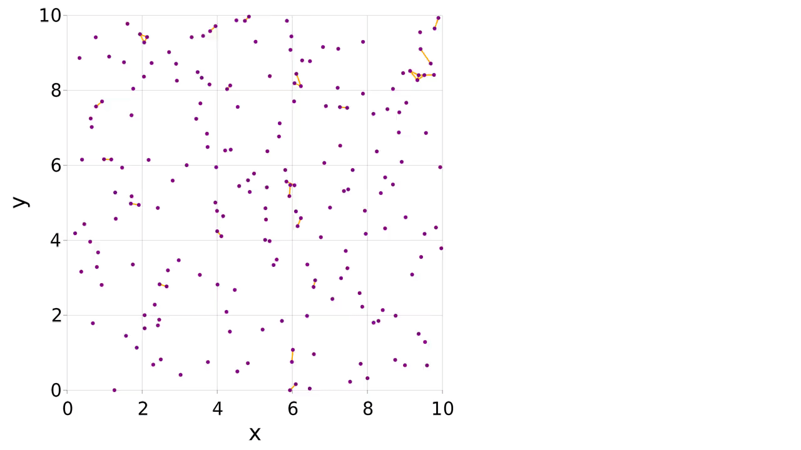
Comparing forces to AD
The force is the negative derivative of the potential energy with respect to position. MD packages, including Molly, implement the force functions directly for performance. However it is also possible to compute the forces using AD. Here we compare the two approaches for the Lennard-Jones potential and see that they give the same result.
using Molly
using Zygote
using GLMakie
inter = LennardJones(force_units=NoUnits, energy_units=NoUnits)
boundary = CubicBoundary(5.0)
a1, a2 = Atom(σ=0.3, ϵ=0.5), Atom(σ=0.3, ϵ=0.5)
function force_direct(dist)
c1 = SVector(1.0, 1.0, 1.0)
c2 = SVector(dist + 1.0, 1.0, 1.0)
vec = vector(c1, c2, boundary)
F = force(inter, vec, c1, c2, a1, a2, boundary)
return F[1]
end
function force_grad(dist)
grad = gradient(dist) do dist
c1 = SVector(1.0, 1.0, 1.0)
c2 = SVector(dist + 1.0, 1.0, 1.0)
vec = vector(c1, c2, boundary)
potential_energy(inter, vec, c1, c2, a1, a2, boundary)
end
return -grad[1]
end
dists = collect(0.2:0.01:1.2)
forces_direct = force_direct.(dists)
forces_grad = force_grad.(dists)
f = Figure(resolution=(600, 400))
ax = Axis(
f[1, 1],
xlabel="Distance / nm",
ylabel="Force / kJ * mol^-1 * nm^-1",
title="Comparing gradients from direct calculation and AD",
)
scatter!(ax, dists, forces_direct, label="Direct", markersize=8)
scatter!(ax, dists, forces_grad , label="AD" , markersize=8, marker='x')
xlims!(ax, low=0)
ylims!(ax, -6.0, 10.0)
axislegend()
save("force_comparison.png", f)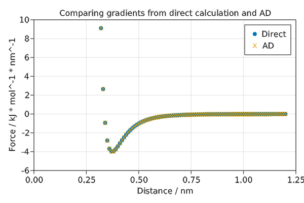
AtomsCalculators.jl compatibility
The AtomsCalculators.jl package provides a consistent interface that allows forces, energies etc. to be calculated with different packages. Calculators can be used with a Molly System by giving them as general_inters during system setup. It is also possible to use a MollyCalculator to calculate properties on AtomsBase.jl systems:
using Molly
using AtomsBaseTesting
using AtomsCalculators
ab_sys = AbstractSystem(
make_test_system().system;
boundary_conditions = [Periodic(), Periodic(), Periodic()],
bounding_box = [[1.54732, 0.0 , 0.0 ],
[0.0 , 1.4654985, 0.0 ],
[0.0 , 0.0 , 1.7928950]]u"Å",
)
coul = Coulomb(coulomb_const=2.307e-21u"kJ*Å", force_units=u"kJ/Å", energy_units=u"kJ")
calc = MollyCalculator(pairwise_inters=(coul,), force_units=u"kJ/Å", energy_units=u"kJ")
AtomsCalculators.potential_energy(ab_sys, calc)9.112207692184968e-21 kJAtomsCalculators.forces(ab_sys, calc)5-element Vector{SVector{3, Quantity{Float64, ùêã ùêå ùêì^-2, Unitful.FreeUnits{(Å^-1, kJ), ùêã ùêå ùêì^-2, nothing}}}}:
[5.052086904272771e-21 kJ Å^-1, 1.0837307191961731e-20 kJ Å^-1, -5.366866699852613e-21 kJ Å^-1]
[5.252901001053284e-22 kJ Å^-1, -2.3267009382813732e-21 kJ Å^-1, 9.276115314848821e-21 kJ Å^-1]
[-8.613462805775053e-21 kJ Å^-1, 5.726650141840073e-21 kJ Å^-1, -2.072868074170469e-20 kJ Å^-1]
[3.0360858013969523e-21 kJ Å^-1, -1.423725639552043e-20 kJ Å^-1, 1.681943212670848e-20 kJ Å^-1]
[0.0 kJ Å^-1, 0.0 kJ Å^-1, 0.0 kJ Å^-1]We can also convert the AtomsBase.jl system to a Molly System:
System(ab_sys; force_units=u"kJ/Å", energy_units=u"kJ")System with 5 atoms, boundary CubicBoundary{Quantity{Float64, ùêã, Unitful.FreeUnits{(Å,), ùêã, nothing}}}(Quantity{Float64, ùêã, Unitful.FreeUnits{(Å,), ùêã, nothing}}[1.54732 Å, 1.4654985 Å, 1.792895 Å])Variations of the Morse potential
The Morse potential for bonds has a parameter a that determines the width of the potential. It can also be compared to the harmonic bond potential.
using Molly
using GLMakie
boundary = CubicBoundary(5.0)
dists = collect(0.12:0.005:2.0)
function energies(inter)
return map(dists) do dist
c1 = SVector(1.0, 1.0, 1.0)
c2 = SVector(dist + 1.0, 1.0, 1.0)
potential_energy(inter, c1, c2, boundary)
end
end
f = Figure(resolution=(600, 400))
ax = Axis(
f[1, 1],
xlabel="Distance / nm",
ylabel="Potential energy / kJ * mol^-1",
title="Variations of the Morse potential",
)
lines!(
ax,
dists,
energies(HarmonicBond(k=20_000.0, r0=0.2)),
label="Harmonic",
)
for a in [2.5, 5.0, 10.0]
lines!(
ax,
dists,
energies(MorseBond(D=100.0, a=a, r0=0.2)),
label="Morse a=$a nm^-1",
)
end
ylims!(ax, 0.0, 120.0)
axislegend(position=:rb)
save("morse.png", f)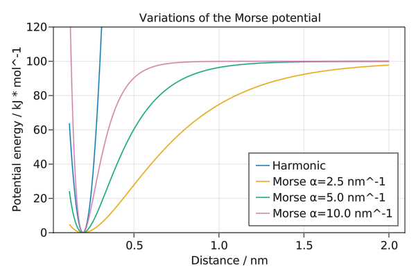
Variations of the Mie potential
The Mie potential is parameterised by m describing the attraction and n describing the repulsion. When m=6 and n=12 this is equivalent to the Lennard-Jones potential.
using Molly
using GLMakie
boundary = CubicBoundary(5.0)
a1, a2 = Atom(σ=0.3, ϵ=0.5), Atom(σ=0.3, ϵ=0.5)
dists = collect(0.2:0.005:0.8)
function energies(m, n)
inter = Mie(m=m, n=n)
return map(dists) do dist
c1 = SVector(1.0, 1.0, 1.0)
c2 = SVector(dist + 1.0, 1.0, 1.0)
vec = vector(c1, c2, boundary)
potential_energy(inter, vec, c1, c2, a1, a2, boundary)
end
end
f = Figure(resolution=(600, 400))
ax = Axis(
f[1, 1],
xlabel="Distance / nm",
ylabel="Potential energy / kJ * mol^-1",
title="Variations of the Mie potential",
)
for m in [4, 6]
for n in [10, 12]
lines!(
ax,
dists,
energies(Float64(m), Float64(n)),
label="m=$m, n=$n",
)
end
end
xlims!(ax, low=0.2)
ylims!(ax, -0.6, 0.3)
axislegend(position=:rb)
save("mie.png", f)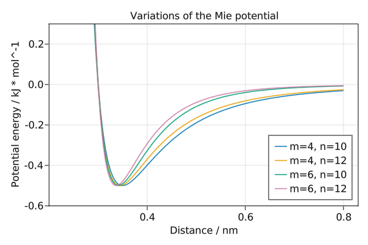
Variations of the soft-core LJ potential
The soft-core Lennard-Jones potential is parameterised by three parameters $\alpha$, $\lambda$ and $p$. These parameters shift the value of $r_{ij}$ to $\left(r_{ij}^6 + \sigma_{ij} \alpha \lambda^{p} \right)^{\frac{1}{6}}$. This gives a soft core, i.e. the potential does not diverge for $r_{ij} \rightarrow 0$.
using Molly
using GLMakie
boundary = CubicBoundary(5.0)
a1, a2 = Atom(σ=0.3, ϵ=0.5), Atom(σ=0.3, ϵ=0.5)
dists = collect(0.05:0.005:0.8)
function energies(α, λ, p)
inter = LennardJonesSoftCore(α=α, λ=λ, p=p)
return map(dists) do dist
c1 = SVector(1.0, 1.0, 1.0)
c2 = SVector(dist + 1.0, 1.0, 1.0)
vec = vector(c1, c2, boundary)
potential_energy(inter, vec, c1, c2, a1, a2, boundary)
end
end
f = Figure(resolution=(600, 400))
ax = Axis(
f[1, 1],
xlabel="Distance / nm",
ylabel="Potential energy / kJ * mol^-1",
title="Variations of the soft-core Lennard-Jones potential",
)
for λ in [0.8, 0.9]
for α in [0.2, 0.4]
for p in [2]
lines!(
ax,
dists,
energies(α, λ, p),
label="α=$α, λ=$λ, p=$p",
)
end
end
end
lines!(ax, dists, energies(0, 1, 2), label="standard LJ potential")
ylims!(-5, 25)
axislegend(position=:rt)
save("lennard_jones_sc.png", f)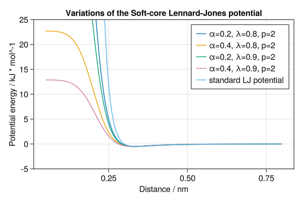
The form of the potential is approximately the same as standard Lennard-Jones for $r_{ij} > \sigma_{ij}$ if some fractional values are used for $\lambda$ and $\alpha$.
Crystal structures
Molly can make use of SimpleCrystals.jl to generate crystal structures for simulation. All 3D Bravais lattices and most 2D Bravais lattices are supported as well as user-defined crystals through the SimpleCrystals API. The only unsupported crystal types are those with a triclinic 2D simulation domain or crystals with lattice angles larger than 90°.
Molly provides a constructor for System that takes in a Crystal struct:
using Molly
import SimpleCrystals
a = 0.52468u"nm" # Lattice parameter for FCC Argon at 10 K
atom_mass = 39.948u"g/mol"
temp = 10.0u"K"
fcc_crystal = SimpleCrystals.FCC(a, atom_mass, SVector(4, 4, 4))
n_atoms = length(fcc_crystal)
velocities = [random_velocity(atom_mass, temp) for i in 1:n_atoms]
r_cut = 0.85u"nm"
sys = System(
fcc_crystal;
velocities=velocities,
pairwise_inters=(LennardJones(
cutoff=ShiftedForceCutoff(r_cut),
energy_units=u"kJ * mol^-1",
force_units=u"kJ * mol^-1 * nm^-1",
),),
loggers=(
kinetic_eng=KineticEnergyLogger(100),
pot_eng=PotentialEnergyLogger(100),
),
energy_units=u"kJ * mol^-1",
force_units=u"kJ * mol^-1 * nm^-1",
)Certain potentials such as LennardJones and Buckingham require extra atomic paramaters (e.g. σ) that are not implemented by the SimpleCrystals API. These paramaters must be added to the System manually by making use of the copy constructor:
σ = 0.34u"nm"
ϵ = (4.184 * 0.24037)u"kJ * mol^-1"
updated_atoms = []
for i in eachindex(sys)
push!(updated_atoms, Atom(index=sys.atoms[i].index, charge=sys.atoms[i].charge,
mass=sys.atoms[i].mass, σ=σ, ϵ=ϵ, solute=sys.atoms[i].solute))
end
sys = System(sys; atoms=[updated_atoms...])Now the system can be simulated using any of the available simulators:
simulator = Langevin(
dt=2.0u"fs",
temperature=temp,
friction=1.0u"ps^-1",
)
simulate!(sys, simulator, 200_000)Constrained dynamics
Molly supports the SHAKE and RATTLE constraint algorithms. The code below shows an example where molecules of hydrogen are randomly placed in a box and constrained during a simulation.
using Molly
using Test
r_cut = 8.5u"Å"
temp = 300.0u"K"
atom_mass = 1.00794u"g/mol"
n_atoms_half = 200
atoms = [Atom(index=i, mass=atom_mass, σ=2.8279u"Å", ϵ=0.074u"kcal* mol^-1") for i in 1:n_atoms_half]
max_coord = 200.0u"Å"
coords = [max_coord .* rand(SVector{3}) for i in 1:n_atoms_half]
boundary = CubicBoundary(200.0u"Å")
lj = LennardJones(
cutoff=ShiftedPotentialCutoff(r_cut),
use_neighbors=true,
energy_units=u"kcal * mol^-1",
force_units=u"kcal * mol^-1 * Å^-1",
)
# Add bonded atoms
bond_length = 0.74u"Å" # Hydrogen bond length
constraints = []
for j in 1:n_atoms_half
push!(atoms, Atom(index=(j + n_atoms_half), mass=atom_mass, σ=2.8279u"Å", ϵ=0.074u"kcal* mol^-1"))
push!(coords, coords[j] .+ SVector(bond_length, 0.0u"Å", 0.0u"Å"))
push!(constraints, DistanceConstraint(j, j + n_atoms_half, bond_length))
end
shake = SHAKE_RATTLE([constraints...], length(atoms), 1e-8u"Å", 1e-8u"Å^2 * ps^-1")
neighbor_finder = DistanceNeighborFinder(
eligible=trues(length(atoms), length(atoms)),
dist_cutoff=1.5*r_cut,
)
disable_constrained_interactions!(neighbor_finder, shake.clusters)
sys = System(
atoms=atoms,
coords=coords,
boundary=boundary,
pairwise_inters=(lj,),
neighbor_finder=neighbor_finder,
constraints=(shake,),
energy_units=u"kcal * mol^-1",
force_units=u"kcal * mol^-1 * Å^-1",
)
random_velocities!(sys, temp)
simulator = VelocityVerlet(dt=0.001u"ps")
simulate!(sys, simulator, 10_000)
# Check that the constraints are satisfied at the end of the simulation
@test check_position_constraints(sys, shake)
@test check_velocity_constraints(sys, shake)